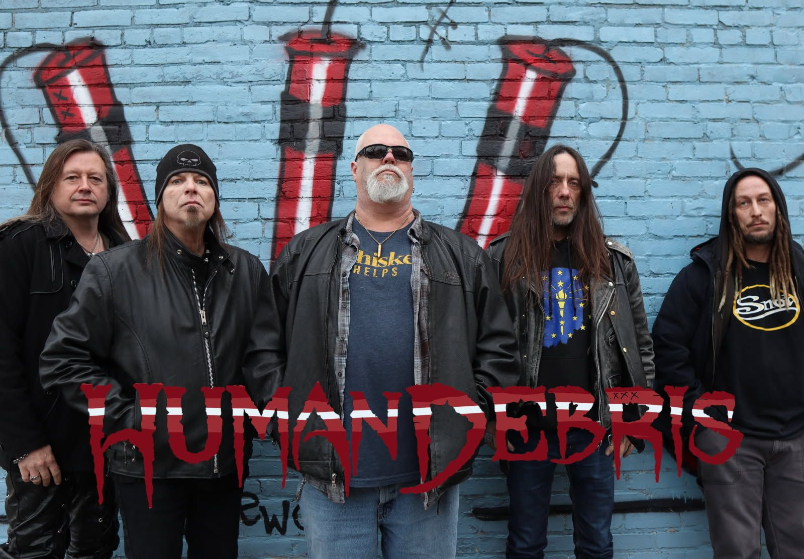
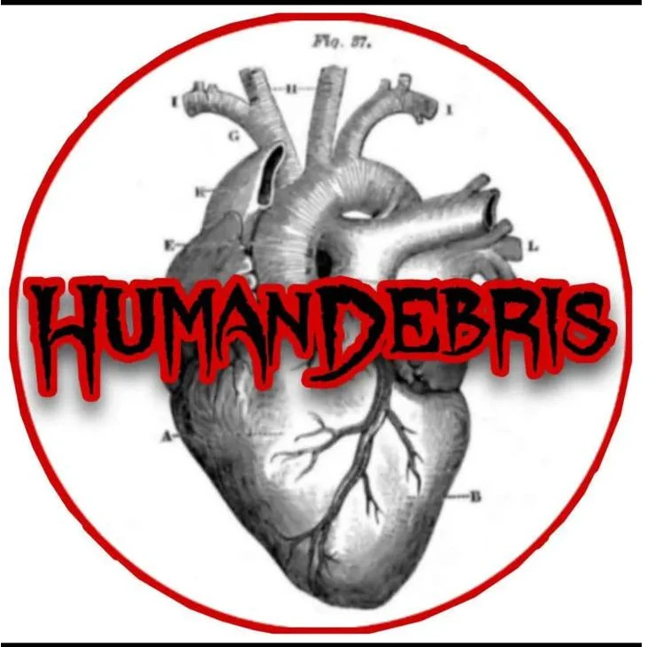
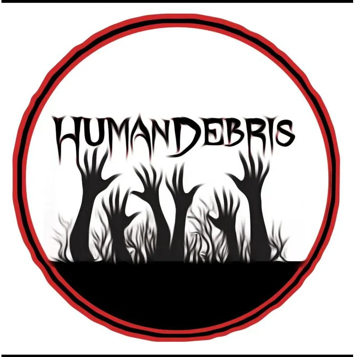
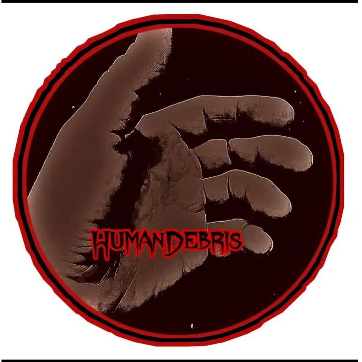

Indianapolis, Indiana

HumanDebris was born out of Indianapolis, Indiana — five musicians who'd been around long enough to know what real metal sounds like, and fed up enough to do something about it. Billy Lee, Jef Jones, Jared Asher, Ritchie Wilkison, and Peter Wickes came together with a shared obsession: the raw, unfiltered heaviness of the bands that built the genre. No trends. No gimmicks. Just the riff, the groove, and the grind.
Drawing from the dark cathedral sound of Black Sabbath, the locomotive fury of Motorhead, the brooding pressure of Soundgarden, the speed and aggression of Slayer, and the chaotic energy of Bad Brains — HumanDebris forges something that feels both ancient and alive. Indianapolis never knew it needed this band until they hit the stage.

Guitar

Guitar

Drums
Vocals
Bass